Intro to Dynamic Dashboards
One of the game-changing innovations that OneStream introduced in association with Workspaces is the concept of dynamic dashboards. Imagine needing hundreds of dashboards that differ slightly across user groups or locations. Traditionally, this would require creating and maintaining countless components and dashboards to capture all possible variations. Dynamic dashboards eliminate this complexity by empowering you to design a single stored dashboard along with a few core components. Using its powerful in-memory capabilities, OneStream can dynamically generate all permutations on the fly when the dashboard is accessed.
For example, if your dashboards include combo boxes or buttons that vary in number across different users, you no longer need to build each variation manually. Dynamic Dashboard Services work behind the scenes to dynamically assemble these variations during runtime, drastically reducing manual effort and complexity.
This subject can get quite deep, given the powerful possibilities it unlocks. For this book, however, the goal is to introduce the core concepts and inspire you with the potential of dynamic dashboards – without diving too heavily into the code. More detailed guides and documentation are available for those who wish to explore further.
In this chapter, we will walk through two simple examples: first, a no-code approach using embedded dynamic repeater dashboards, followed by a more technical approach utilizing Assembly Services.
My approach to explaining dynamic dashboards will be to walk through these two examples in detail with enough information and screenshots that you will be able to replicate the logic in your own application and have this be a starting point as you try to learn these concepts.
Intro to Dynamic Dashboards
First Concept – Embedded Dynamic Repeater Dashboards (No Code Dynamic Dashboards)
Embedded dynamic repeater dashboard types were introduced in version 8.0, and for me, it was a turning point in understanding what OneStream aimed to achieve with dynamic dashboards. The concept is simple yet transformative: you can take one stored object, use a repeater list to apply different parameters, and render an unlimited number of variations in-memory. As a developer, this means you no longer need to repeatedly replicate, modify, and store multiple objects that differ only slightly. The demonstration I will use has one stored object with multiple template parameters to render five very different buttons. Now, extrapolate that concept with multiple stored items within a dashboard and then multiple embedded dashboards, each having their own repeated items, and you then have a truly unlimited number of in-memory dashboards and components with minimal stored objects.
I’ll illustrate this with a straightforward example – creating five buttons to navigate to different workflows using just one stored button.
Let me show you my first “aha” moment. Coming from pre-Workspace dashboard development, I was familiar with a dashboard only showing the components explicitly added to the Dashboard Components page. When I saw an example of a dashboard with just one button attached, I assumed that’s all I’d see. So, it was impressive to run the dashboard and see five buttons appear, each configured to navigate to a different workflow.
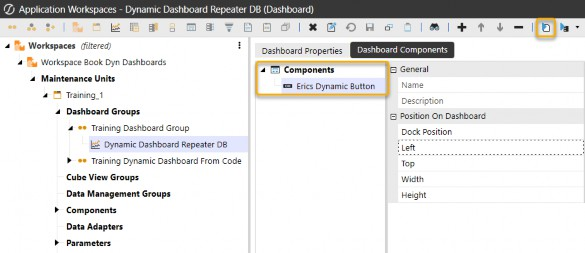
Figure 8.1
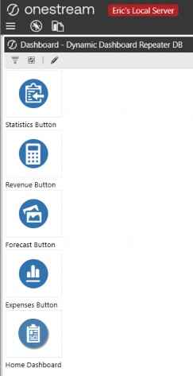
Figure 8.2
I was truly intrigued…
It turns out that OneStream introduced a new dashboard type in version 8.0 that allows for this: the
Embedded Dynamic Repeater.
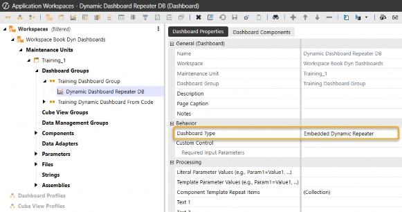
Figure 8.3
Intro to Dynamic Dashboards › First Concept – Embedded Dynamic Repeater Dashboards (No Code Dynamic Dashboards)
Two Key Concepts for Embedded Dynamic Repeater Dashboards
The embedded dynamic repeater dashboard type introduces two powerful concepts: Component Template Repeat Items and Template Parameters. These features enable developers to define and reuse dynamic elements, simplifying the creation of dashboards with repeated components.
Intro to Dynamic Dashboards › First Concept – Embedded Dynamic Repeater Dashboards (No Code Dynamic Dashboards) › Two Key Concepts for Embedded Dynamic Repeater Dashboards
Component Template Repeat Items
Component template repeat items allow developers to define lists of items that are dynamically repeated within a dashboard. This eliminates the need to manually replicate components for every variation. When creating a new dashboard, you’ll find that the Component Template Repeat Items setting in the Processing group is only available for the Embedded Dynamic Repeater dashboard type. This setting is where you define the repeated items and their associated template parameters.
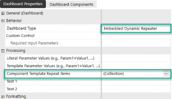
Figure 8.4
Intro to Dynamic Dashboards › First Concept – Embedded Dynamic Repeater Dashboards (No Code Dynamic Dashboards) › Two Key Concepts for Embedded Dynamic Repeater Dashboards
Template Parameters (i.e., Repeater List Parameters)
Template parameters, also known as repeater list parameters, are unique to embedded dynamic repeater and embedded dynamic dashboard types (discussed in the next section). These parameters allow you to dynamically substitute values within repeated components.
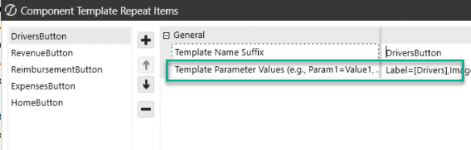
Figure 8.5
Their syntax differs from standard dashboard parameters, and it’s important to use the correct format:
Here is the new syntax to call the parameter
~!templateParam!~
Instead of the standard dashboard parameter syntax:
|!dashboardParam!|
These two concepts are essential for unlocking the full potential of dynamic dashboards, allowing developers to significantly reduce complexity and enhance scalability.
Intro to Dynamic Dashboards › First Concept – Embedded Dynamic Repeater Dashboards (No Code Dynamic Dashboards)
Example 1 - How to Create Multiple Buttons using an Embedded Dynamic Repeater Dashboard
To showcase this concept, it is easiest to walk through a simple example that should only take about five minutes to set up. If you are coming from pre-Workspace dashboard development, this will immediately highlight the concepts behind dynamic dashboards and why they are so powerful.
In this section, I’ll guide you through creating this type of dashboard – the same simple example seen in Figure 8.2, using just one stored button.
Intro to Dynamic Dashboards › First Concept – Embedded Dynamic Repeater Dashboards (No Code Dynamic Dashboards) › Example 1 - How to Create Multiple Buttons using an Embedded Dynamic Repeater Dashboard
Example 1: Functional Requirement
We need to create a vertical stack dashboard with five buttons that navigate to five different Workflow Profiles and different icons using an embedded dynamic repeater dashboard type.
Intro to Dynamic Dashboards › First Concept – Embedded Dynamic Repeater Dashboards (No Code Dynamic Dashboards) › Example 1 - How to Create Multiple Buttons using an Embedded Dynamic Repeater Dashboard
Example 1: Solution Steps
Pay close attention to Step 5 and how the collection needs to be set up. Step 6 showcases a new parameter type within OneStream and special syntax to call them.
Create a Button: Start by creating a button within a Workspace. You’ll edit its details later.
Import Image Files: Upload the image files needed for the button icons.
Prepare Workflow Steps: Ensure the relevant workflow steps are set up in advance.
Create a Dashboard: Set the dashboard type to Embedded Dynamic Repeater.
Set Up the Component Template Repeat Items: Define a list with five items for this example.
Edit the Button Parameters: Update the button to include parameters such as (Nav, Label, image, Workflow, and POV), which are used in the Component Template Repeat Items.
Add the Button to the Dashboard: Attach the button to the dynamic repeater dashboard.
Configure the Dashboard Layout: Adjust the layout to either Vertical Stack or Grid, as needed. (Grid used in this example.)
Run the Dashboard: Test your dashboard to ensure it works as expected.
Inspect in Design Mode: Open Design Mode to review how OneStream generates the components dynamically in-memory.
Intro to Dynamic Dashboards › First Concept – Embedded Dynamic Repeater Dashboards (No Code Dynamic Dashboards) › Example 1 - How to Create Multiple Buttons using an Embedded Dynamic Repeater Dashboard
Example 1: Solution Step Details
Create a Button: Start by creating a button within a Workspace. You’ll edit its details later.
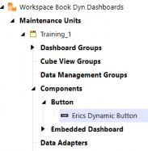
Figure 8.6
Import Image Files: Upload the image files needed for the button icons.
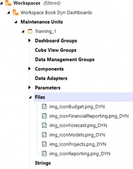
Figure 8.7
Prepare Workflow Steps: Ensure the relevant workflow steps are set up in advance.
(If you are not navigating to workflow steps, skip this step and just navigate to a dashboard in step 5.) I picked a button that will be used to navigate to a specific workflow to showcase the flexibility of using these template parameters.
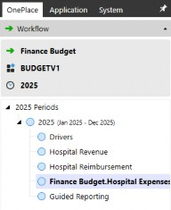
Figure 8.8
Create a Dashboard: Set the dashboard type to Embedded Dynamic Repeater.
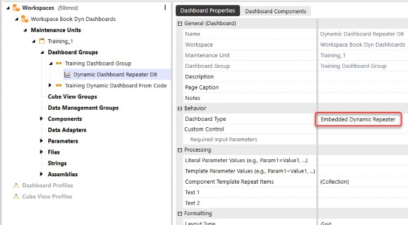
Figure 8.9
Set Up the Component Template Repeat Items: Define a list with five items for this example.
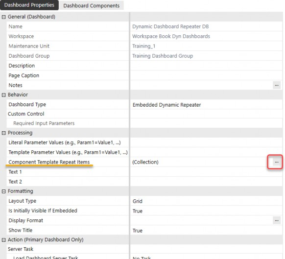
Figure 8.10
a. Create each item to be repeated. The repeater will page through each of the repeat items.
| Note: The template suffix name will be the reference name and will also be used as a suffix when the buttons are rendered in-memory. |
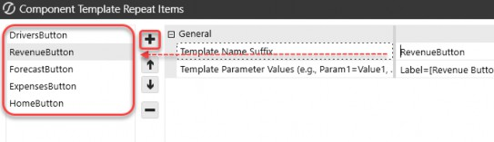
Figure 8.11
b. Create the template parameters separated by a comma (i.e., in this example, I have six parameters defined for each repeat item. These will be used in the settings of the stored button: Label, Image, Nav, WFProfile, WFScenario, and WFTime. They will all be called separately).
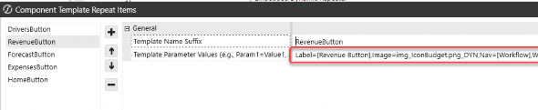
Intro to Dynamic Dashboards › First Concept – Embedded Dynamic Repeater Dashboards (No Code Dynamic Dashboards) › Example 1 - How to Create Multiple Buttons using an Embedded Dynamic Repeater Dashboard › Example 1: Solution Step Details
Closeup of Settings:
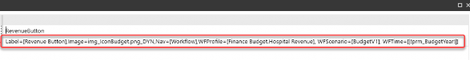
Figure 8.12
(my example)
Label=[Revenue Button], Image=img_IconBudget.png_DYN, Nav=[Workflow], WFProfile=[Finance Budget.Hospital Revenue], WFScenario=[BudgetV1], WFTime=[|!prm_BudgetYear!|]
Note 1: The syntax when there is a space or a special character is to use square brackets Note 2: You can use dashboard parameters inside these lists to give extra flexibility (e.g., Note 3: Each repeat item can have multiple template parameters separated by a comma. |
c. Make sure you have the same parameter names for each repeat item (i.e., this example: Nav, Label, Image, WFProfile, WFScenario, WFTime). These will each be created as a repeater parameter that can be used in the dynamic dashboard.
6. Edit the Button Parameters: Update the button to include parameters such as Nav, Label, image, Workflow, and POV, which are used in the Component Template Repeat Items.
Notice that all six template parameters are used in this button; you do not have to use all of them if there is an instance that doesn’t require them.
Important: The syntax for calling parameters created in the Component Template Repeat Items is |
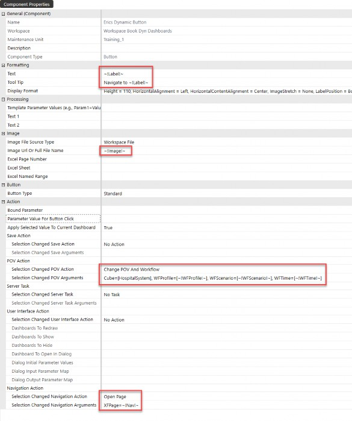
Figure 8.13
Add the Button to the Dashboard: Attach the button to the dynamic repeater dashboard.
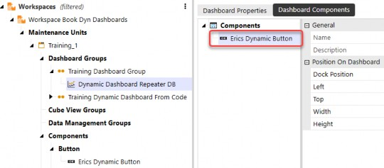
Figure 8.14
Configure the Dashboard Layout: Adjust the layout to either Vertical Stack or Grid, as needed. (Grid used in this example.)
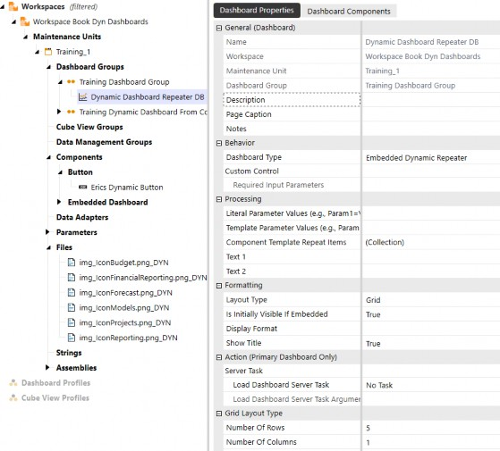
Figure 8.15
Run the Dashboard: Test your dashboard to ensure it works as expected.
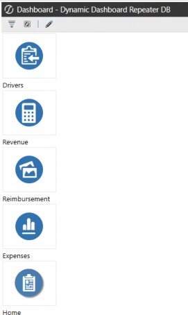
Figure 8.16
Inspect in Design Mode: Open Design Mode to review how OneStream generates the components dynamically in-memory.
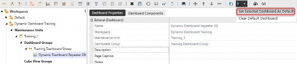
Figure 8.17
OneStream uses the collection of repeater items and cycles through them. These items that you see are in-memory, dynamic buttons that OneStream produces when the dashboard is run.
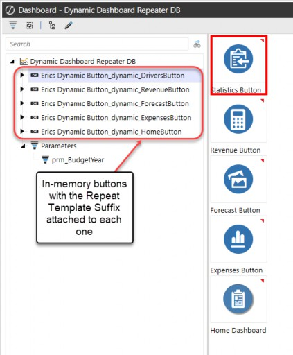
Figure 8.18
Note: each of these in-memory dynamic components will have a suffix of the form: _dynamic_“Template Name Suffix” |
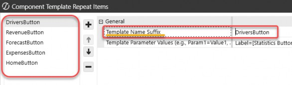
Figure 8.19
This exercise demonstrates the power of embedded dynamic repeater dashboards, showcasing how multiple dynamic dashboards can be generated effortlessly without writing a single line of code. By leveraging minimal stored objects, you’ve created a fully dynamic and scalable solution that adapts seamlessly to future needs. The potential of this approach is immense – enabling enterprise-level dashboards with dozens of components while significantly reducing development time and effort. This is just the beginning of what dynamic dashboards can achieve!
Intro to Dynamic Dashboards
Second Concept – Use Service Factory and Dynamic Dashboard Services to update Repeater Arguments
Now that we’ve explored the underlying principle behind dynamic dashboards, let’s take it a step further. In this example, we’ll achieve the same outcome of creating multiple buttons from a single stored button, but this time we’ll manipulate the repeater arguments programmatically, using an Assembly service file. This approach introduces greater flexibility and scalability, especially for more complex dashboard implementations.
Let me share my second “aha” moment – imagine a dashboard with no components added, yet which still dynamically generates an entire layout in-memory. This is the power unlocked when combining embedded dynamic dashboards and Assembly Services.
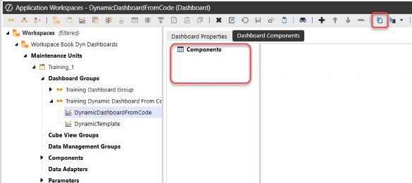
Figure 8.20
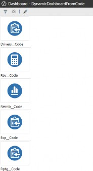
Figure 8.21
This concept goes beyond the capabilities of embedded dynamic repeaters. With Assembly Services, you gain complete control over how dashboards render in-memory, eliminating redundant development work and enabling fully customized dashboards tailored to your needs.
Intro to Dynamic Dashboards › Second Concept – Use Service Factory and Dynamic Dashboard Services to update Repeater Arguments
Example 2 – How to Create Multiple Buttons using Assembly Services with Dynamic Dashboards
Let me show you a complete walkthrough of how to create this simple dashboard using the embedded dynamic dashboard type. This example is a bit long, but it will show you every step needed to create the same dashboard. This example aims to give you a full working example of creating a dynamic dashboard through Assembly Services. To follow along, you’ll need your own image files and dashboard parameters.
Intro to Dynamic Dashboards › Second Concept – Use Service Factory and Dynamic Dashboard Services to update Repeater Arguments
Functional Requirement
Create a vertical stack dashboard with five buttons that vary with the label as well as the icon image for the button. This will be achieved using Assembly Services and the embedded dynamic dashboard type.
Intro to Dynamic Dashboards › Second Concept – Use Service Factory and Dynamic Dashboard Services to update Repeater Arguments
Solution Steps
Create a Button: Start by creating a button (we’ll edit its details later).
Set up Template Dashboard: Create a new dashboard, attach the button, and name the dashboard
DynamicTemplatefor this example.Create the Dynamic Dashboard: Set up another dashboard with Dashboard Type set to Embedded Dynamic. Leave the components empty. Name it
DynamicDashboardFromCode(for this example).Create the Assembly and Files: Generate an Assembly, create a Service Factory file, the dynamic dashboard service file, and a standard class file named
DynamicNavBar.Define the Service Factory: Name the dynamic dashboard service
DynamicDashboardService (for this example).
Configure the Assembly File: Modify the dynamic dashboard’s Assembly file to look for the embedded dynamic dashboard (i.e.,
DynamicDashboardFromCode).Write the DynamicNavBar Code: Edit the code in the
DynamicNavBarfile to programmatically manipulate the repeater arguments.Edit Button Parameters: Update the button to include the following parameters: (
Label2,Image2).Adjust Dashboard Layout: Configure the
DynamicDashboardFromCodedashboard layout to be either Vertical Stack or Grid, depending on your case.Update the Workspace Settings: Ensure the Workspace settings for the Workspace Assembly Service are set correctly.
Review and Test: Review your dashboard and be amazed 😊😊
Intro to Dynamic Dashboards › Second Concept – Use Service Factory and Dynamic Dashboard Services to update Repeater Arguments
Solution Step Details
Create a Button: Start by creating a button (we’ll edit its details later).
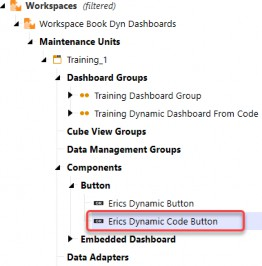
Figure 8.22
Set up Template Dashboard: Create a new dashboard, attach the button, and name the dashboard
DynamicTemplatefor this example.
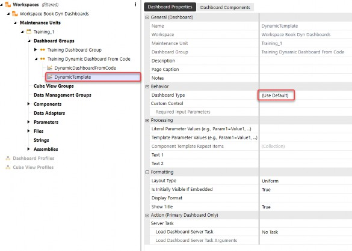
Figure 8.23
Attach the newly created button.
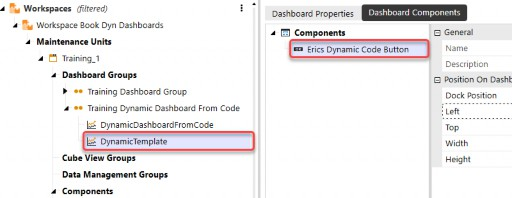
Figure 8.24
3. Create the Dynamic Dashboard: Set up another dashboard with Dashboard Type set to Embedded Dynamic. Leave the components empty. Name it DynamicDashboardFromCode (for this example).
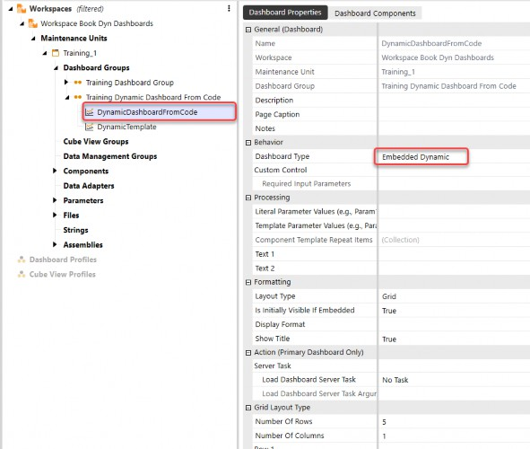
Figure 8.25
Intro to Dynamic Dashboards › Second Concept – Use Service Factory and Dynamic Dashboard Services to update Repeater Arguments › Solution Step Details
No Components
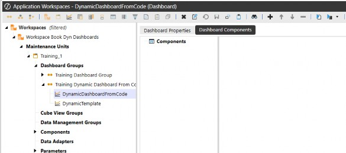
Figure 8.26
Intro to Dynamic Dashboards › Second Concept – Use Service Factory and Dynamic Dashboard Services to update Repeater Arguments › Solution Step Details
4. Create an Assembly and Create Folders and Files
Service Factory file – named
MyServiceFactoryDynamic dashboard service file – named:
DynamicDashboardServiceStandard class file – named
DynamicNavBar
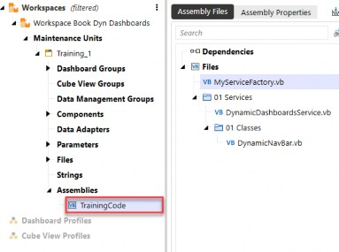
Figure 8.27
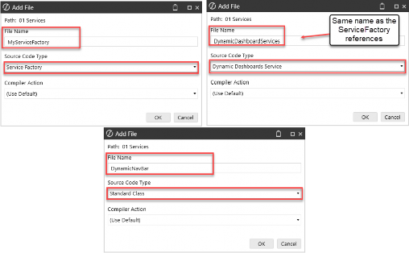
Figure 8.28
5. Define the Service Factory: Name the dynamic dashboard service
DynamicDashboardService (for this example).
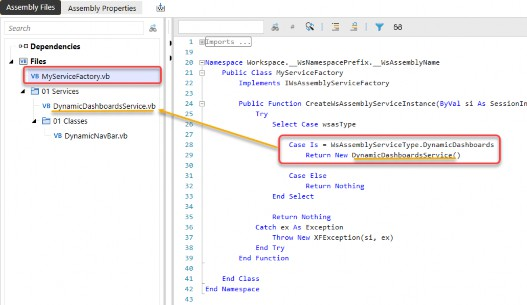
Figure 8.29
6. Configure the Assembly File: Modify the DynamicDashboardsService Assembly file to look for the embedded dynamic dashboard (i.e., DynamicDashboardFromCode).
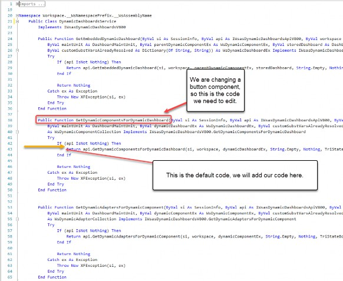
Figure 8.30
Add code to the function GetDynamicComponentsForDynamicDashboard. This code references the embedded dynamic dashboard that we want – DynamicDashboardFromCode.
Then, this code calls the class DynamicNavBar.
Note: DynamicNavBar is the standard class that we created to return the dynamically repeated dashboard. You will see the full code of this class in Figure 8.32 below. |
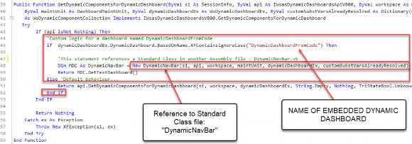
Figure 8.31
7. Write the DynamicNavBar Code: Edit the code in the DynamicNavBar file to programmatically manipulate the repeater arguments.
Now, it’s time to write the code for the DynamicNavBar file we just referenced. Refer to the attached screenshot of the code (Figure 8.32) for a practical example that you can replicate. To use this solution, you’ll need to update it with your own image files and dashboard parameters.
The primary goal of this code is to populate a dictionary object with all of the component repeat items and then run them dynamically against the dashboard. This ensures that the button (which is looking for these template parameters) can be configured and rendered appropriately.
There are many ways to accomplish this in both VB.Net and C#, but this example is a straightforward approach to demonstrate the concept.
| Note: As a friendly reminder, I don’t come from a programming background, so please be kind when you are critiquing this code 😊😊. Consider this a starting point for further customization, based on your specific requirements. |
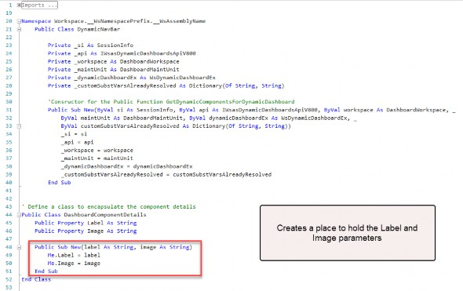
(Code continued below)
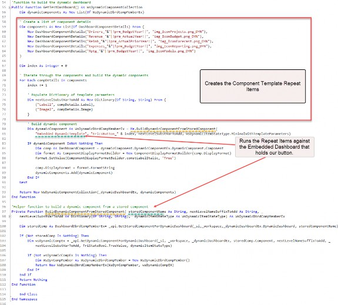
Figure 8.32
Edit Button Parameters: Update the button to include the following parameters: (
Label2,Image2). As a reminder, the repeater parameter’s syntax is~!parameter!~.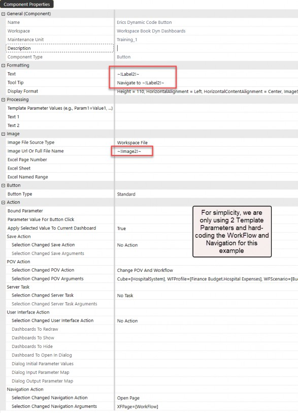
Figure 8.33
Adjust Dashboard Layout: Configure the
DynamicDashboardFromCodedashboard layout to be either Vertical Stack or Grid, depending on your case. We are using Grid here.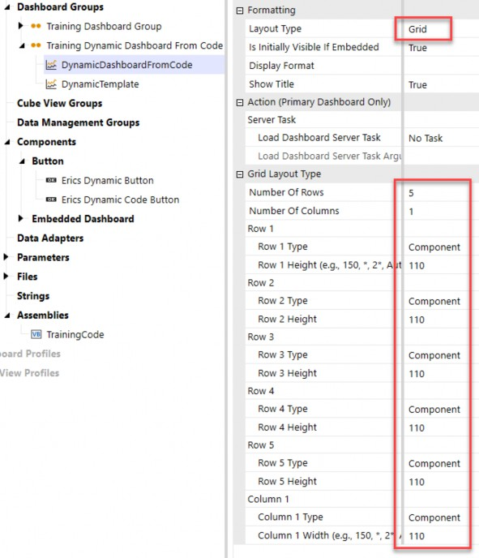
Figure 8.34
Update the Workspace Settings: Ensure you have the Workspace settings defined to your Service Factory.
| Remember: When you invoke an embedded dynamic dashboard type, OneStream looks in the current Workspace to see which Service Factory is defined, and then looks for the dynamic dashboard service type. |
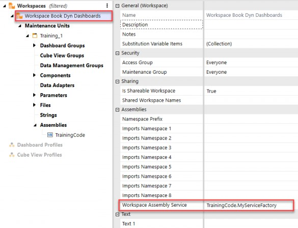
Figure 8.35
Review: Final dashboard using dynamic dashboard service from an Assembly factory.
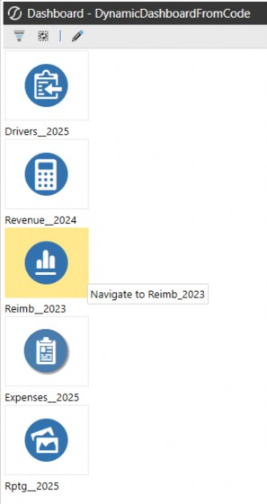
Figure 8.36
Review: View the Dashboard in Design Mode and see the dynamic buttons that came from only one stored button.
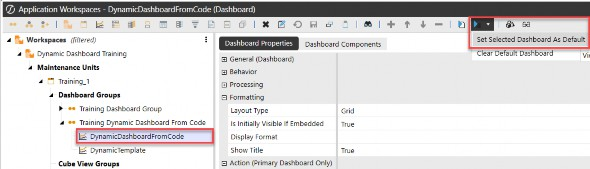
Figure 8.37
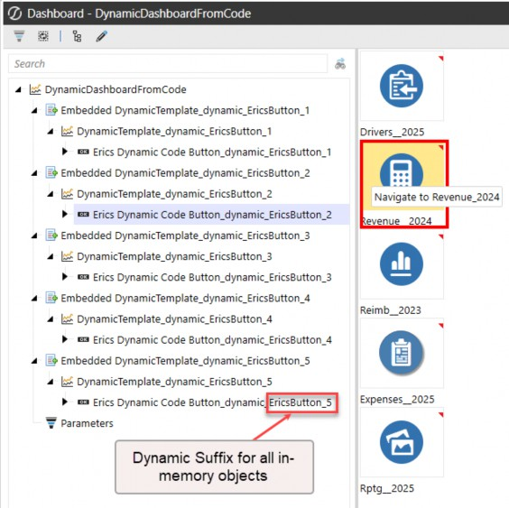
Figure 8.38
You have control over what suffix you give the dynamic objects. In this example, here is where that is defined in the DynamicNavBar.vb file:
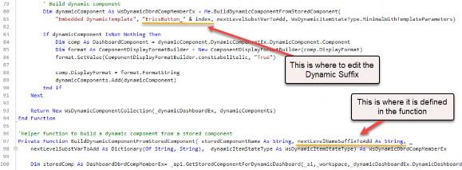
Figure 8.39
Intro to Dynamic Dashboards › Second Concept – Use Service Factory and Dynamic Dashboard Services to update Repeater Arguments
Summary of Example 2
Let’s summarize the big picture of what the code is doing:
When the embedded dynamic dashboard is invoked, OneStream searches the current Workspace for the associated solution factory.
The Service Factory identifies the dynamic dashboard service and routes the request to the appropriate service file.
Within the dynamic dashboard service file, it matches the dashboard’s name and executes the relevant code.
The executed code references a standard class file to define all the repeatable arguments required for the dashboard.
Using the list of repeatable arguments, the service cycles through the embedded dynamic dashboard, dynamically binding the template parameters to the button.
Finally, it generates and returns the in-memory repeater template parameters, enabling the dashboard to render dynamically in-memory.
Intro to Dynamic Dashboards
Differences Between No-Code Dynamic Dashboards and Code-Based Dynamic Dashboard Services
In the previous examples, we demonstrated how dynamic dashboards can create multiple components from a single stored component, with each “in-memory” component configured using repeater parameters. Now, let’s take this concept a step further.
No-Code Dynamic Dashboards, using embedded dynamic repeaters are a great starting point but are limited in scope – they can only modify settings that accept text values. This is because the template parameters defined in the component template repeat items return string variables – although great for simple use cases – lack versatility for more complex requirements.
This is where Dynamic Dashboard Services excel. With code-based solutions, you can modify settings that traditionally don’t accept text values, such as action settings. For instance, in a button component, this could include the save action, POV action, or navigation action.
While repeater parameters allow for dynamic changes to parameterized settings, certain settings – like save settings or server task settings – could not previously be altered dynamically, leading to the need for multiple, nearly identical component copies. With Dynamic Dashboard Services, OneStream removes these limitations. Nearly all dashboard component settings can now be adjusted programmatically, in-memory, allowing you to eliminate redundancy and streamline your dashboards.
Here’s an example of a button component and the wide range of settings that can now be altered dynamically in-memory (Figure 8.40):
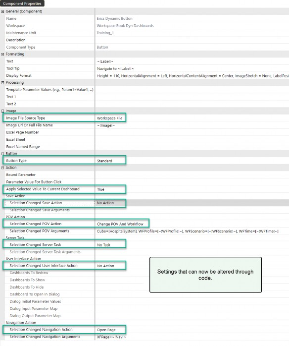
Figure 8.40
With Figure 8.40 illustrating the extensive range of settings that can now be modified dynamically, we’ve reached the tipping point in understanding the full capabilities of Dynamic Dashboard Services. Moving beyond foundational concepts, it’s time to explore the advanced methods and classes that drive these dynamic interactions. While mastering these components requires some technical effort, understanding their role will unlock the ability to design even more adaptive and scalable dashboards. The next section aims to guide you through these objects and provide practical insights into how they can be leveraged to enhance your OneStream implementations.
Intro to Dynamic Dashboards
Advanced Topics – Dynamic Methods and Classes for Dynamic Dashboard Service
Admittedly, diving into the dynamic dashboard service methods and classes can seem overwhelming at first, especially if you’re unfamiliar with these concepts. However, this section is designed to gently guide you into the world of Dynamic Dashboard Services in OneStream, providing you with the resources and insights to kickstart your learning journey.
The key to mastering Dynamic Dashboard Services lies in understanding the additional methods and classes specifically built to support dynamic functionality. These tools offer tremendous flexibility and are integral to creating scalable, adaptive dashboards. Think of this section as your reference guide – highlighting the objects and methods you can leverage in your code to unlock the full potential of Dynamic Dashboard Services.
When you create a new dynamic dashboard service file, OneStream provides several default methods to help you get started. Among these, two of the most commonly used and versatile methods are:
GetEmbeddedDynamicDashboard
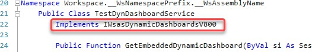
Note: Do not delete or comment out any of the default functions in the dynamic dashboard service file because they are required to be available due to the line 22 statement: Figure 8.41 |
GetDynamicComponentsForDynamicDashboards
Let’s get a detailed understanding of the two most common methods.
Intro to Dynamic Dashboards › Advanced Topics – Dynamic Methods and Classes for Dynamic Dashboard Service
1. GetEmbeddedDynamicDashboard
Purpose: This method is used to retrieve or generate a dynamic dashboard that is embedded within a parent dashboard or Workspace. It is typically invoked when a specific dashboard needs to be dynamically created and rendered based on the context, such as user interactions or runtime parameters.
Functionality:
o It takes in several important parameters like session information (SessionInfo), API context (IWsasDynamicDashboardsApiV800), and a reference to the parent dashboard or Workspace.
The method resolves the relevant template parameters, stored dashboards, or data required to construct the embedded dynamic dashboard.
o It generates a WsDynamicDashboardEx object, which represents the embedded dashboard in its fully constructed form.
The embedded dashboard is created in-memory at runtime, allowing for a highly flexible and on-demand rendering approach.
Use Case:
When you have a “parent” dashboard with nested components or dashboards that depend on dynamic inputs, this method helps dynamically generate the embedded dashboards as needed.
For example, in a financial planning application, it could be used to generate sub-dashboards for individual departments, based on user input or selected parameters.
Intro to Dynamic Dashboards › Advanced Topics – Dynamic Methods and Classes for Dynamic Dashboard Service
2. GetDynamicComponentsForDynamicDashboards
Purpose: This method is used to retrieve the individual components of a dynamic dashboard. It focuses on providing the building blocks (dynamic components) that make up the entire dashboard, such as charts, labels, buttons, or other UI elements.
Functionality:
o It takes inputs like session information (SessionInfo), API context (IWsasDynamicDashboardsApiV800), and the dashboard or Workspace for which the components are needed.
The method constructs a collection of components (e.g., WsDynamicComponent
objects) based on predefined templates, stored components, or runtime parameters.
These components are dynamically created in-memory, ensuring that the dashboard layout can be customized and rendered as required.
Use Case:
When building dashboards where each component’s content, appearance, or functionality depends on dynamic data or templates, this method is used to fetch and prepare those components.
For example, in a reporting dashboard, it could dynamically generate components like charts for revenue, expenses, and profit, tailored to the user’s selected time period or business unit.
Intro to Dynamic Dashboards › Advanced Topics – Dynamic Methods and Classes for Dynamic Dashboard Service › 2. GetDynamicComponentsForDynamicDashboards
Key Difference Between the Two:
GetEmbeddedDynamicDashboard: Focuses on creating or retrieving the entire dynamic dashboard as a single entity.GetDynamicComponentsForDynamicDashboards: Focuses on creating or retrieving individual components that make up a dynamic dashboard.
Together, these methods enable a highly flexible and scalable approach to dashboard creation in OneStream, allowing developers to efficiently manage both the overall structure and granular details of dynamic dashboards.
Intro to Dynamic Dashboards › Advanced Topics – Dynamic Methods and Classes for Dynamic Dashboard Service
3. Other methods similar to GetDynamicComponentsForDynamicDashboards
These are three other methods that are listed in the default dynamic dashboard service files and are run when the relevant elements, such as data adapters and parameters, are created in-memory.
GetDynamicAdaptersForDynamicComponent: Creates data adapters dynamically in-memory, which are used to connect components to data sources and facilitate real-time data interaction.GetDynamicCubeViewForDynamicAdapter: Generates an in-memory data adapter by leveraging an in-memory Cube View, enabling efficient data manipulation and visualization.GetDynamicParametersForDynamicComponent: Dynamically builds parameters in-memory that can be used to filter, configure, or pass values to dashboard components at runtime.
Classes that are specific to OneStream’s Dynamic Dashboard Services There are additional classes and objects in OneStream’s Dynamic Dashboard Services that are designed to provide flexibility and customization when working with dynamic dashboards. Here are a few notable ones:
Intro to Dynamic Dashboards › Advanced Topics – Dynamic Methods and Classes for Dynamic Dashboard Service
WsDynamicComponent
Represents a single dynamic component within a dashboard. It is used to define and manage individual elements, such as labels, buttons, or charts, that are dynamically created and rendered in dashboards.
Intro to Dynamic Dashboards › Advanced Topics – Dynamic Methods and Classes for Dynamic Dashboard Service
WsDynamicCollection
A collection or container that holds multiple dynamic components. It is typically used to group components together for easier management and rendering within a dynamic dashboard.
Intro to Dynamic Dashboards › Advanced Topics – Dynamic Methods and Classes for Dynamic Dashboard Service
WsDynamicDbrdCompMemberEx
An extended member of a dynamic dashboard component. This class is used to define additional properties or behaviors for components that are part of a dynamic dashboard, allowing for more customization and functionality.
Intro to Dynamic Dashboards › Advanced Topics – Dynamic Methods and Classes for Dynamic Dashboard Service
WsDynamicRepeatArgs
Represents the arguments or parameters used in a repeater dashboard. These are essential for creating multiple instances of a component dynamically, with variations in their properties or data based on the provided arguments.
Intro to Dynamic Dashboards › Advanced Topics – Dynamic Methods and Classes for Dynamic Dashboard Service
WsDynamicDashboardEx
Represents the entire dynamic dashboard, including its components and layout. It is often used as the main object for managing and rendering dashboards dynamically.
Intro to Dynamic Dashboards › Advanced Topics – Dynamic Methods and Classes for Dynamic Dashboard Service
WsDynamicParameterCollection
A collection of parameters that can be dynamically applied to components within a dashboard. This is useful for passing data or settings to multiple components at runtime.
Intro to Dynamic Dashboards › Advanced Topics – Dynamic Methods and Classes for Dynamic Dashboard Service
WsDynamicComponentRepeatArgs
Used to define arguments for repeating components dynamically. This is particularly helpful when creating dashboards with repeated elements, such as rows or columns of similar components.
Intro to Dynamic Dashboards › Advanced Topics – Dynamic Methods and Classes for Dynamic Dashboard Service
WsDynamicItemStateType
Represents the state of a dynamic item (e.g., minimal, full, or with template parameters). This is used to control how components are rendered or processed and is useful to optimize performance.
Intro to Dynamic Dashboards › Advanced Topics – Dynamic Methods and Classes for Dynamic Dashboard Service
DashboardWorkspace
While not exclusive to dynamic dashboards, this class is essential for managing the Workspace context in which dashboards and their components are created and maintained.
Intro to Dynamic Dashboards › Advanced Topics – Dynamic Methods and Classes for Dynamic Dashboard Service
DashboardMaintUnit
Represents the maintenance unit for dashboards, which is critical for organizing and managing dashboard components and Assemblies.
Intro to Dynamic Dashboards › Advanced Topics – Dynamic Methods and Classes for Dynamic Dashboard Service
ComponentDisplayFormatBuilder
A utility class for customizing the display format of dashboard components, such as labels, fonts, and styles.
Intro to Dynamic Dashboards › Advanced Topics – Dynamic Methods and Classes for Dynamic Dashboard Service
XFSelection… Rules To Control Dashboard Component Behavior
XFSelection rules are the secret sauce behind making dashboards in OneStream truly interactive and responsive. This is what gives you the power to control exactly how components behave when users interact with them – whether that’s saving data, triggering an action, or responding to a selection change. Think about the real-world impact: you can create dashboards that adapt seamlessly to your workflows, instantly refresh data, or take user input and transform it into actionable results. These rules are essential for building dashboards that feel intuitive and effortless to use, saving you from hours of manual tweaks and ensuring a smooth, engaging experience for the end user. By tapping into the flexibility of these rules, you can make your dashboards smarter, faster, and far more user-friendly.
Intro to Dynamic Dashboards › Advanced Topics – Dynamic Methods and Classes for Dynamic Dashboard Service › XFSelection… Rules To Control Dashboard Component Behavior
XFSelectionChangedSaveType
Defines how changes in selection are saved (e.g., automatically, manually, or not at all).
Intro to Dynamic Dashboards › Advanced Topics – Dynamic Methods and Classes for Dynamic Dashboard Service › XFSelection… Rules To Control Dashboard Component Behavior
XFSelectionChangedTaskType
Specifies the type of task triggered by a selection change (e.g., calculation, custom business rule execution, or no task).
Intro to Dynamic Dashboards › Advanced Topics – Dynamic Methods and Classes for Dynamic Dashboard Service › XFSelection… Rules To Control Dashboard Component Behavior
XFSelectionChangedTaskResult
Represents the result of a task executed due to a selection change, including success or failure details.
Intro to Dynamic Dashboards › Advanced Topics – Dynamic Methods and Classes for Dynamic Dashboard Service › XFSelection… Rules To Control Dashboard Component Behavior
XFSelectionChangedUIAction
Determines the user interface action performed when a selection changes (e.g., refreshing components or navigating dashboards).
Intro to Dynamic Dashboards › Advanced Topics – Dynamic Methods and Classes for Dynamic Dashboard Service › XFSelection… Rules To Control Dashboard Component Behavior
XFSelectionChangedWorkflowAction
Handles workflow-related actions triggered by selection changes, such as updating the Workflow POV.
Intro to Dynamic Dashboards › Advanced Topics – Dynamic Methods and Classes for Dynamic Dashboard Service › XFSelection… Rules To Control Dashboard Component Behavior
XFSelectionChangedDataAction
Manages data-related actions, such as recalculating or refreshing data sources based on selection changes.
Intro to Dynamic Dashboards › Advanced Topics – Dynamic Methods and Classes for Dynamic Dashboard Service › XFSelection… Rules To Control Dashboard Component Behavior
XFSelectionChangedParameterAction
Controls the behavior of parameters when a selection changes, including resolving template variables dynamically.
Intro to Dynamic Dashboards › Advanced Topics – Dynamic Methods and Classes for Dynamic Dashboard Service › XFSelection… Rules To Control Dashboard Component Behavior
XFSelectionChangedComponentAction
Modifies component-specific settings, such as enabling/disabling components or changing their visibility.
These rules provide granular control over dashboard behavior and interactivity.
Intro to Dynamic Dashboards
Conclusion
Dynamic Dashboard Services in OneStream undoubtedly come with a learning curve, especially for those just beginning to explore these methods and classes. This chapter is meant to give you that initial push and provide the foundational knowledge needed to start your journey with confidence.
The no-code approach of embedded dynamic repeater dashboards serves as a perfect introduction. It demonstrates how powerful dynamic dashboards can be, whether you’re creating something as simple as the example above, or crafting far more intricate solutions limited only by your imagination. This approach provides very good insight into what the Dynamic Dashboard Services are trying to achieve through code. By utilizing stored components and applying template parameters, you can dynamically generate multiple iterations of dashboards in-memory, precisely when they’re needed.
This flexibility highlights the core purpose of Dynamic Dashboard Services: empowering users to scale and adapt their dashboards through both simplicity and advanced customization. With time and practice, you’ll begin to unlock the full potential of these services, creating dynamic and efficient solutions that save time, reduce redundancy, and adapt to evolving business needs.
Beyond just simplifying development, these services lay the groundwork for “future-proofing” your OneStream application, ensuring it remains agile and relevant as requirements change.